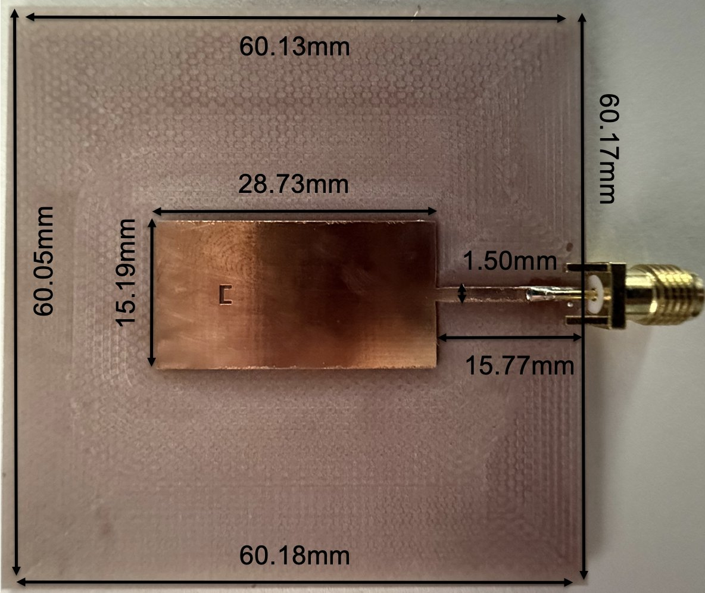
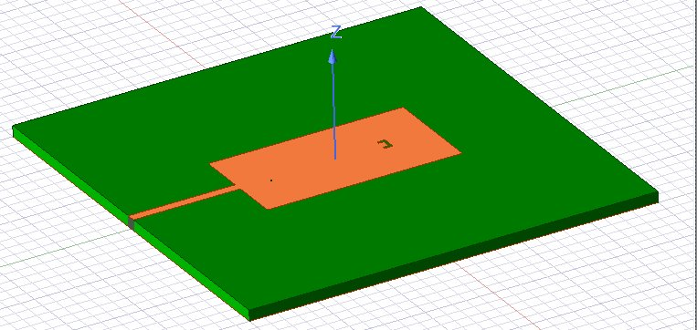
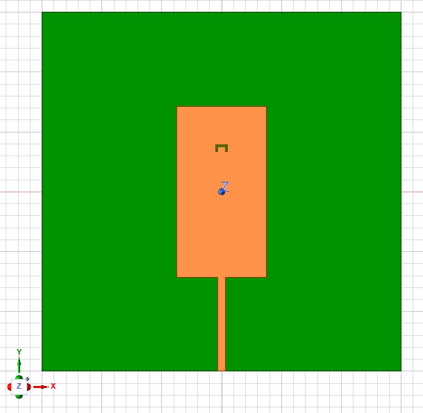
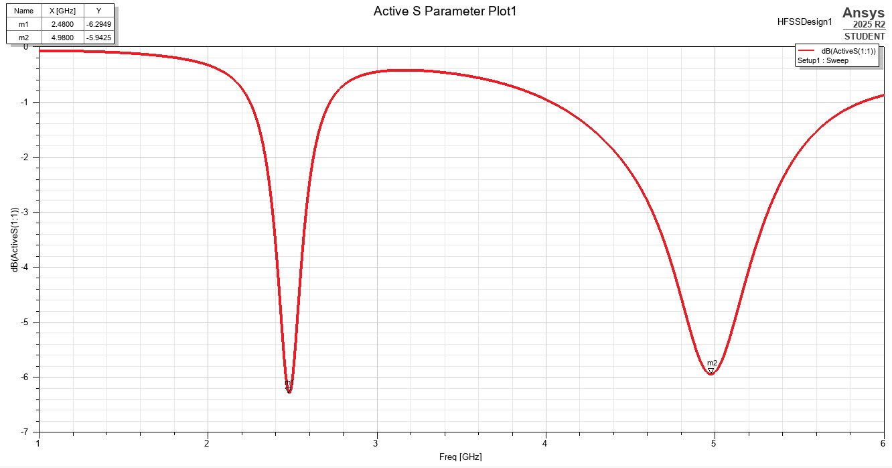
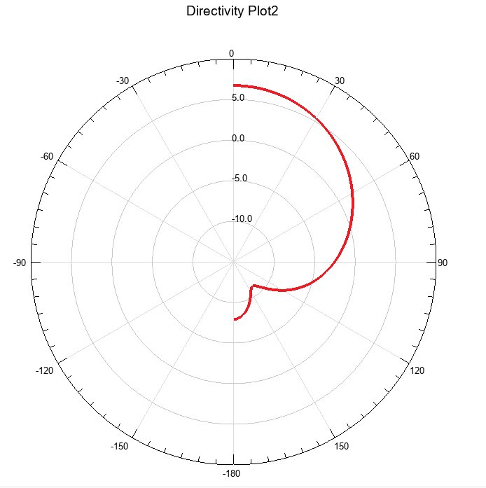
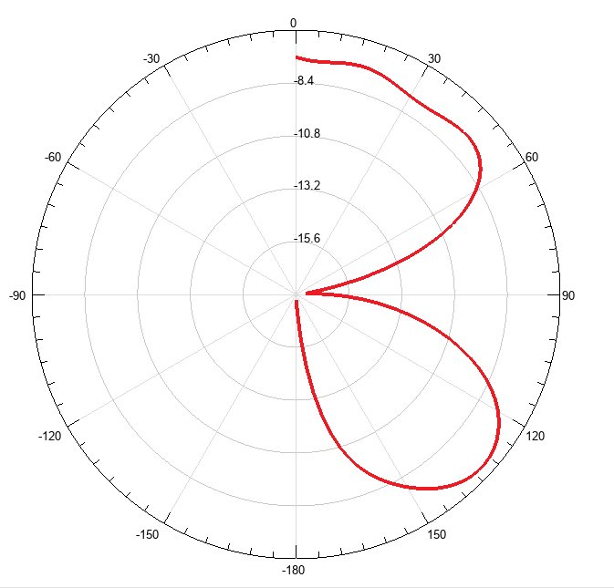
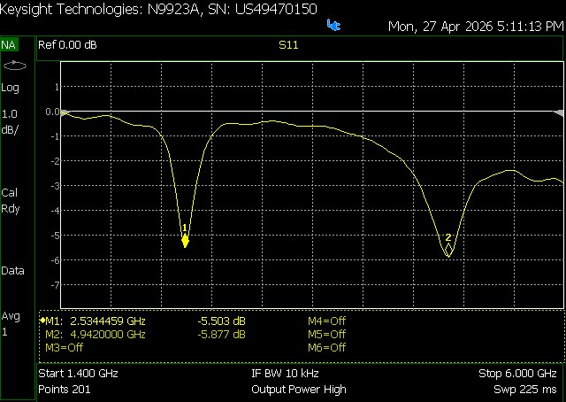

- 2.53 GHzMeasured lower band · 2.0% from simulation
- 4.94 GHzMeasured upper band · 0.8% from simulation
- 12 gFinished antenna mass
- 60 mmSquare FR4 board
Overview
A dual-band patch resonates at two frequencies from a single radiator. Our goal was a microstrip patch for the 2.45 GHz and 5 GHz Wi-Fi bands: understand the theory, simulate it, then build it and measure it. The outer patch sets the lower band, and a small U-shaped slot cut into the patch adds the upper band.
The result is cheap, light, and easy to fabricate. The milled board resonated at 2.53 GHz and 4.94 GHz, within 2% of the simulated design.
Theory
- Started from the textbook rectangular patch, which behaves roughly as a half-wavelength resonator.
- Sized the patch for the 2.4 GHz band with the standard closed-form equations: the patch width W, the effective permittivity εreff (fields travel partly in FR4 and partly in air), the fringing-field extension ΔL, and the corrected patch length L.
- Those equations only give a starting size. The slot and feed add coupling they don't capture, and the 5 GHz band comes mainly from simulation, so the final dimensions were tuned in HFSS.
Simulation
- Modeled the antenna in Ansys HFSS as a terminal network with a 50 Ω lumped port at the feed line, perfect-E boundaries for the patch, feed, and ground, and an FR4 substrate.
- Swept 1–6 GHz and checked S11, directivity, and surface-current distribution at both bands.
- The tuned model resonates at 2.48 GHz and 4.98 GHz.










Build & test
- Milled the design as a copper microstrip on an FR4 substrate and soldered on an edge-mount SMA connector.
- Measured S11 on a Keysight N9923A VNA from 1.4 to 6 GHz. Cleaning the board and making a solid connector joint noticeably improved the measurements.
- The antenna resonated at 2.53 GHz and 4.94 GHz, 2.0% and 0.8% from the simulated resonances.


| Band | Simulated | Measured | Difference |
|---|---|---|---|
| Lower | 2.48 GHz | 2.53 GHz | 2.0% |
| Upper | 4.98 GHz | 4.94 GHz | 0.8% |
What I learned
The patch dimensions control the primary band and the slot controls the secondary one, so each band can be tuned mostly on its own. The narrow bandwidth means the physical tolerances are tight. Next steps would be a PIN diode across the slot bridge to switch the upper band on and off, and arraying the element for higher gain, beamforming, and MIMO.